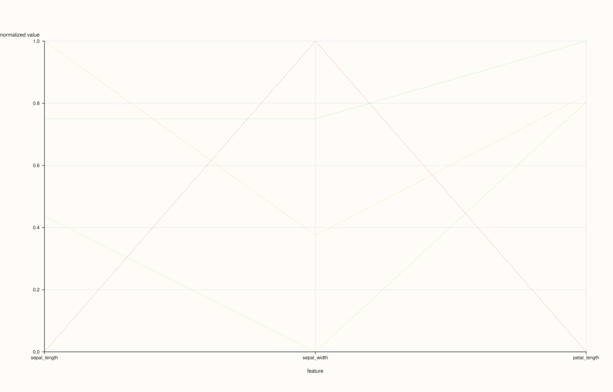
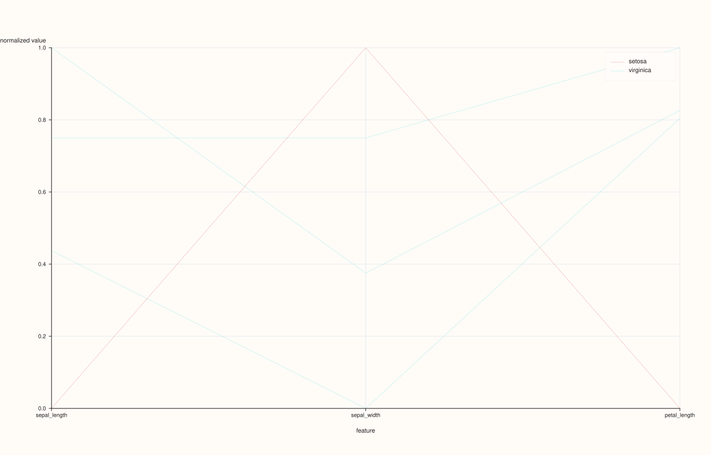
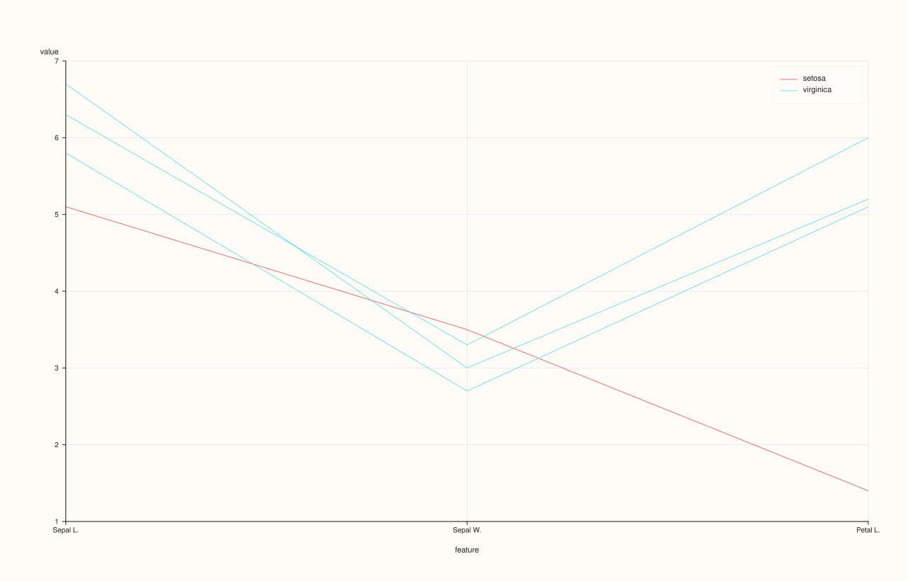
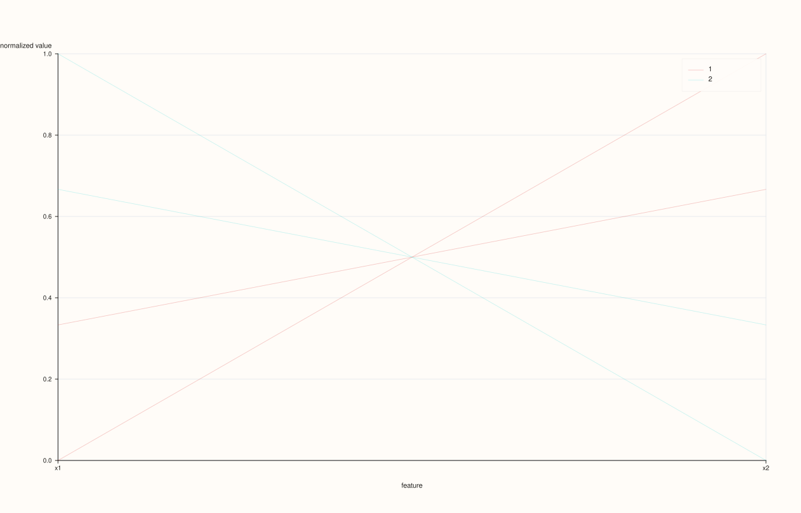

DataFramePlotAccessor::parallel¶
Back to DataFramePlotAccessor API Reference
Signature¶
DataFramePlotAccessor::parallel(
pluss::msharp::RangeView::Of<std::string_view> features = {},
std::optional<std::string_view> class_feature = std::nullopt,
const ParallelPlotOptions& options = {}) const -> pluss::pl::Studio
What It Does¶
Draws a parallel-coordinates plot: one vertical axis per selected numeric feature, laid out side by side, and one connected line per row threading through each axis at that row’s value for that feature. This is a way to see multivariate structure across many features at once — rows that behave similarly across several dimensions trace visually similar paths.
This page also establishes mechanics shared with andrews_curves()
and radviz(), which follow the same feature-selection, class-coloring, and
NaN-handling rules described here.
Important
Masked/invalid cells become NaN gaps, not dropped rows — unlike box()/violin()
Unlike box() and violin(), which silently drop non-finite values
entirely before plotting, parallel() (and andrews_curves()/radviz()) convert an
invalid cell to NaN and keep the row’s position in the data — the underlying per-row line
simply has a gap or break at that feature’s axis rather than the row being omitted from the
figure altogether.
Parameters¶
features (RangeView<std::string_view>, default {})
Numeric features to use as axes, in the given order. Empty (the default) infers every
numeric feature in the frame — see box()’s important callout for the exact
rule and throw text.
class_feature (std::optional<std::string_view>, default std::nullopt)
An optional feature used to color/group the per-row lines. Unlike
scatter()’s hue_feature, this accepts any feature kind — it’s
converted to text via a Note cast if it isn’t already Note-kind, so a numeric class
feature works too (each distinct value, stringified, becomes its own class), not just
a text-like one.
options (ParallelPlotOptions)
cpp struct ParallelPlotOptions { std::vector<std::string> labels{}; bool normalize{true}; std::int64_t max_points{1200}; double alpha{0.24}; float trace_width{0.9F}; bool show_grid{true}; bool show_legend{true}; };
labels, left empty, defaults to the resolved feature names — set it explicitly for
custom axis labels (must match the feature count). normalize = true (the default)
rescales each axis independently so features on very different numeric ranges remain
visually comparable. alpha defaults quite low (0.24) since parallel-coordinates
plots are typically drawn with many overlapping, semi-transparent lines. max_points
caps how many rows are drawn (for large frames, a subsample rather than every row).
Returns¶
pluss::pl::Studio
A figure with one pane containing the parallel-coordinates trace(s) — one combined
trace, or one per class when class_feature is given.
Examples¶
Example 1. No explicit features, no class: every numeric feature in the frame, one plain trace per row.
using namespace pluss::table;
auto flowers = DataFrame({
{"sepal_length", Slate(pluss::make_series({5.1, 6.7, 5.8, 6.3}))},
{"sepal_width", Slate(pluss::make_series({3.5, 3.0, 2.7, 3.3}))},
{"petal_length", Slate(pluss::make_series({1.4, 5.2, 5.1, 6.0}))},
{"species", Slate(pluss::make_note({"setosa", "virginica", "virginica", "virginica"}))},
});
auto chart = flowers.plot().parallel();
chart.show();
parallel() with no arguments uses sepal_length, sepal_width, and petal_length (the
three Series-kind features) as axes; species (Note-kind) is excluded from the axes
since it isn’t numeric.

Example 2. An explicit feature subset, colored by a class feature.
auto chart = flowers.plot().parallel({"sepal_length", "sepal_width", "petal_length"}, "species");
chart.show();
Each row’s line is colored/grouped by its species value; a legend labeled with each
distinct species appears (since show_legend defaults to true).

Example 3. An explicit ParallelPlotOptions, with custom axis labels and reduced
transparency for a small dataset where overplotting isn’t a concern.
ParallelPlotOptions options;
options.labels = {"Sepal L.", "Sepal W.", "Petal L."};
options.alpha = 0.7;
options.normalize = false;
auto chart = flowers.plot().parallel({"sepal_length", "sepal_width", "petal_length"}, "species", options);
chart.show();
normalize = false plots each axis on its own raw numeric scale instead of a normalized
0..1-style range — meaningful here since sepal_length/sepal_width/petal_length are
all already in centimeters and comparable.

Example 4. class_feature accepts a numeric feature too — unlike scatter()’s
hue_feature, there’s no type restriction here.
auto numeric_class = DataFrame({
{"x1", Slate(pluss::make_series({1.0, 2.0, 3.0, 4.0}))},
{"x2", Slate(pluss::make_series({4.0, 3.0, 2.0, 1.0}))},
{"code", Slate(pluss::make_series({1.0, 1.0, 2.0, 2.0}))},
});
auto chart = numeric_class.plot().parallel({"x1", "x2"}, "code");
code is a plain numeric Series, but parallel() still accepts it as class_feature —
its values are cast to text first ("1", "2"), so rows with code == 1.0 and code == 2.0 become two distinctly colored classes.

Notes¶
Empty (default)
featuresinfers every numeric feature — seebox()’s important callout for the exact rule.Masked/invalid cells become
NaNgaps in a row’s line rather than dropping the row entirely — see the important callout above.class_featureaccepts any feature kind (cast to text internally), unlikescatter()’s stricterhue_feature.labels, if set explicitly, must match the resolved feature count.Returns a
pluss::pl::Studio— seeline()’s important callout for how to view or save the result.
See Also¶
DataFramePlotAccessor::andrews_curves/radviz: other multivariate views sharing this page’s feature-selection and class-coloring rules.DataFramePlotAccessor::scatter_matrix: pairwise relationships instead of one line per row across every axis at once.